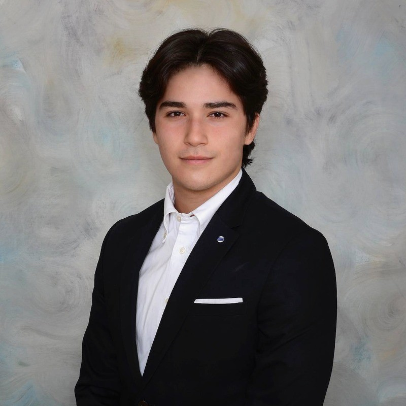

01MEXICO → MADRID → UGADaniel Aguilar
CS & AI · Fourth year · IE University
Originally from Mexico and studying in Madrid, Daniel is a fourth-year Computer Science and Artificial Intelligence student at IE University, currently on exchange at UGA. His interests come together where AI, virtual reality, and game creation meet.